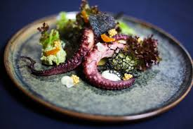

Bài Viết Nổi Bật

Nghệ Thuật Plating Trong Fine Dining
Khám phá cách các đầu bếp hàng đầu biến món ăn thành tác phẩm nghệ thuật qua kỹ thuật bài trí đỉnh cao.
Đọc Thêm ->
Các Bài Viết Khác
Bí Quyết Chọn Nguyên Liệu Cao Cấp
Từ nấm Truffle đến bò Kobe, tìm hiểu cách chọn nguyên liệu để tạo nên dấu ấn hoàn hảo.
Xu Hướng Ẩm Thực 2026
Những phong cách thưởng thức mới và nguyên liệu bền vững đang lên ngôi trong thế giới Fine Dining.
Hành Trình Của Một Đầu Bếp Michelin
Chia sẻ về nỗi lực đạt được sao Michelin và áp lực duy trì chất lượng trong từng món ăn.